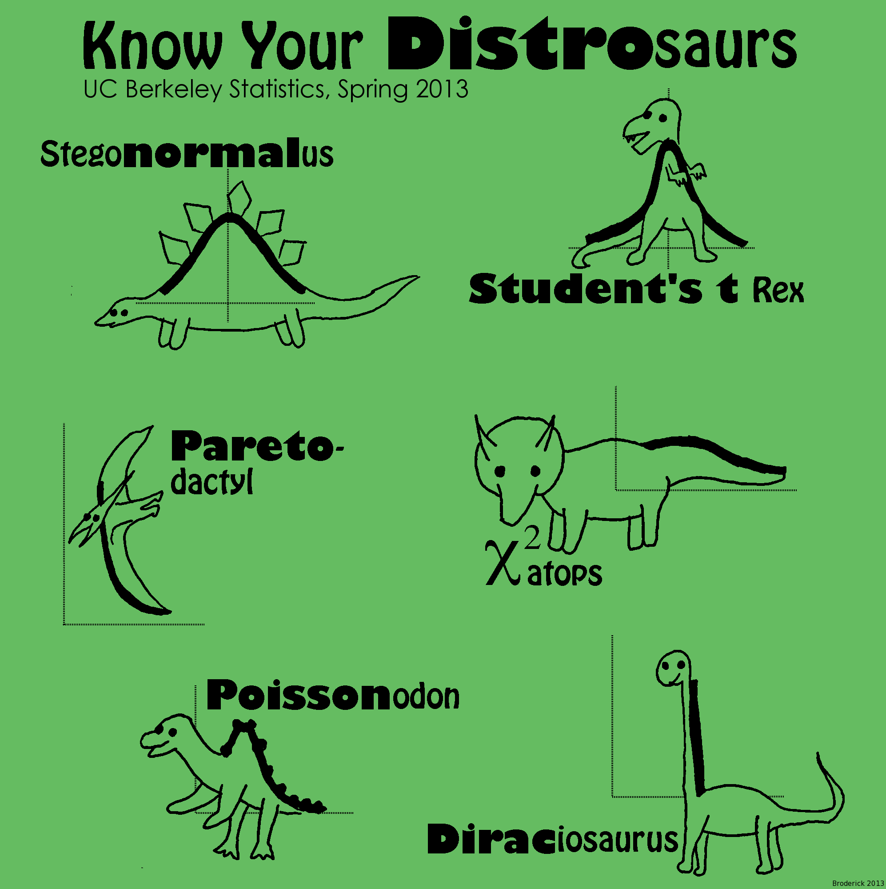
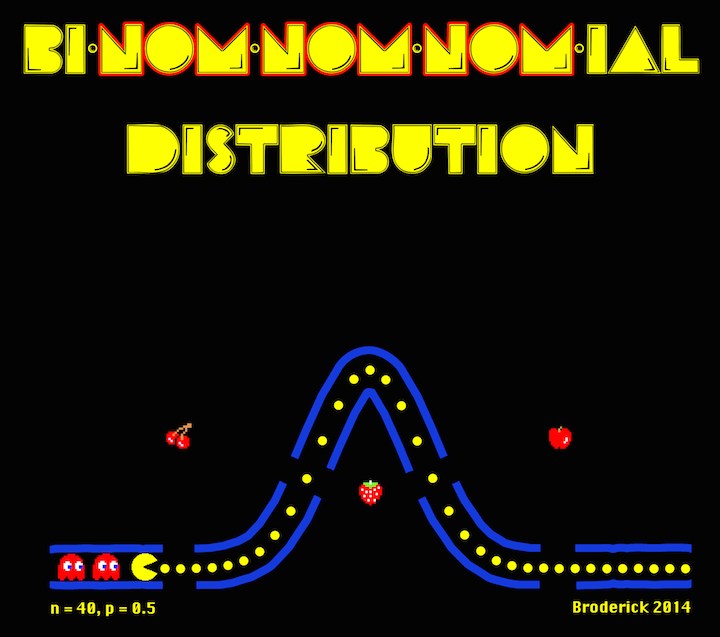

Miscellaneous
- Nomon is our assistive technology method for selecting items on a screen with a single switch (as for users with locked-in syndrome, cerebral palsy, etc.)
[toggle more info]
- We have recently revived the Nomon project. If you are interested, contact us for the latest. You can find some recent Nomon code here: [link]
- My entry on the Mathematics Genealogy Project is here
- 18766 Broderick is an asteroid that is named after me, since 2003.
[toggle more info]
- Here are two Wikipedia links. If you follow the links, 18766 Broderick appears at the top, and many other asteroids appear around it: [link about the asteroid] [link about the asteroid name]
- Here is a NASA JPL link with lots of information about the asteroid as well as an illustration of its orbit and more information on the name: [link]
- HarleMCMC Shake: our 2013 Harlem Shake video about MCMC
[toggle more info]

- We made two short animations to illustrate the differences between a Metropolis-Hastings (MH) sampler and a Hamiltonian Monte Carlo (HMC) sampler. [youtube video]
- All code is available for download at this github repo: [link]
- Learn more about the Harlem Shake 2013 meme here: [link]
- Joint work with David Duvenaud
- Know Your Distrosaurs: In 2013, I illustrated some common statistical distributions as dinosaurs for a t-shirt contest
[toggle more info]

- By popular request, you can now buy the shirt (and some other items) on demand: [link]
- Full size original image: [link]
- Released 2013 April 24 under a Creative Commons Attribution 3.0 Unported license
- Bi-nom-nom-nom-ial: In 2014, I reimagined the binomial distribution as an arcade game for a t-shirt contest
[toggle more info]

- By popular request, you can now buy the shirt (and some other items) on demand: [link]
- Full size original image: [link]
- Released 2014 June 6 under a Creative Commons Attribution 3.0 Unported license
![[link]](img/dino_release.png){kind=link}
![[link]](img/binomial_release.png){kind=link}
Plain Academic